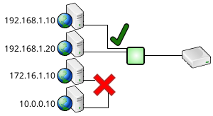

Enhanced Database Security
SQL Relay provides various database security enhancements such as TLS and Kerberos support on front and back ends, IP filtering, connection schedules, and query filtering.
TLS and Kerberos
The connection between the application and SQL Relay can be secured with TLS, in encryption-only, certificate validation, host name validation, and mutual authentication modes.
The connection between the application and SQL Relay can also be secured with Kerberos and Active Directory encryption and authentication.
If the back-end database supports TLS, the SQL Relay can secure the connection between itself and the back-end as well.
It's even possible to secure the front-end with Kerberos and the back-end with TLS.
IP Filtering
IP filtering can be used to restrict the set of IP addresses that applications can connect to SQL Relay from.
For example, clients from 192.168.1.* addresses can be allowed while clients from 172.16.*.* and 10.*.*.* addresses can be denied.

Connection Schedules
Connection schedules constrain database access to specified times.
For example, only Bob and Sally may be allowed to access the database during the day shift.

While only Joe and Mary may be allowed to access the database during the night shift.

Database access can be constrained to any combination of years, months, days of the month, days of the week, and times of day.
Query Filtering
Query filtering prevents queries that match a certian pattern from being run at all. There are often certain queries that will bring the entire database to its knees. A common use for query filtering is to identify those queries and prevent them from being run.
For example, select * from hugetable where id=100 might be fine...

...but select * from hugetable without a where clause might crush the database.

SQL Relay can be configured to allow one and reject the other.